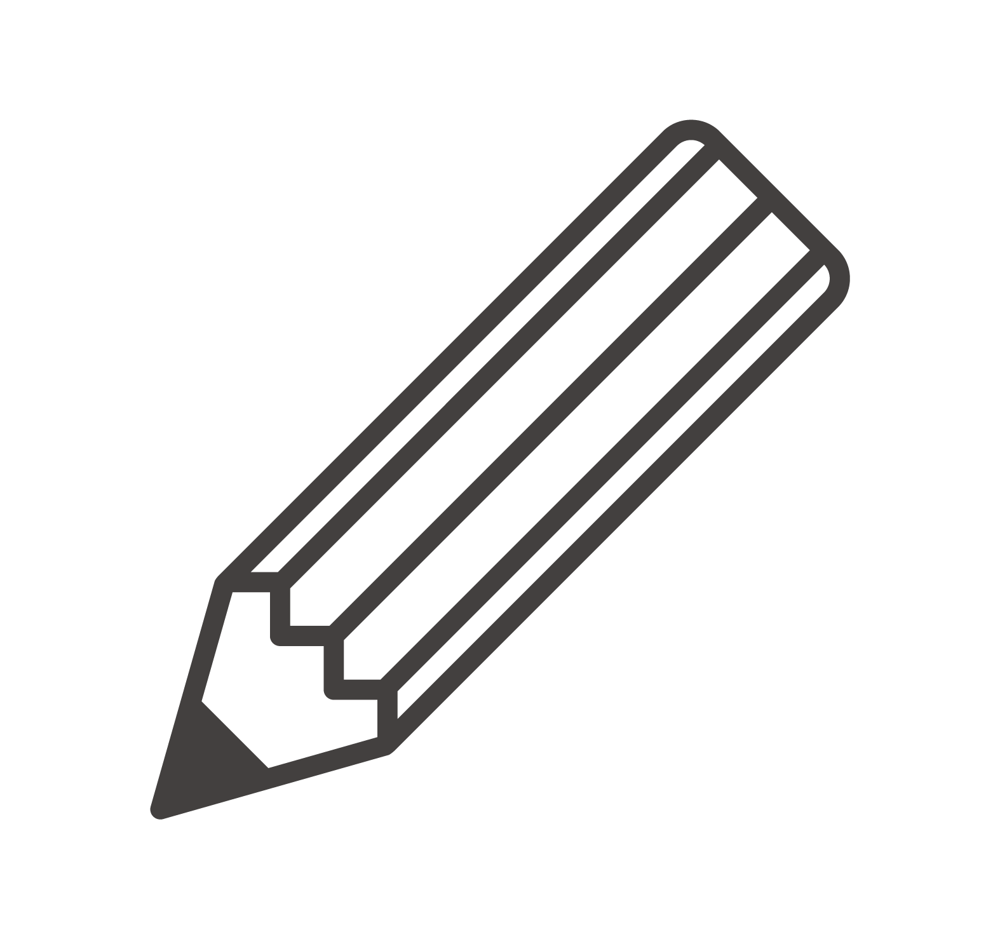
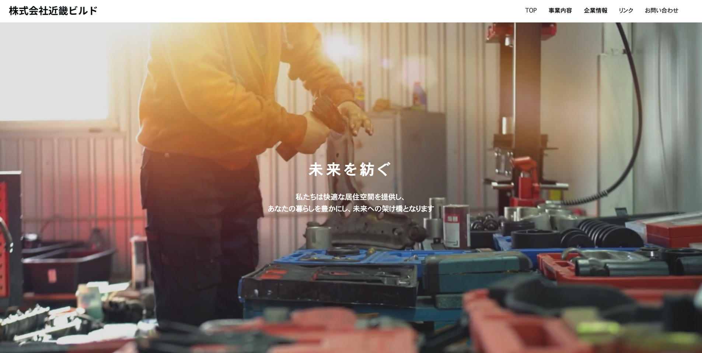
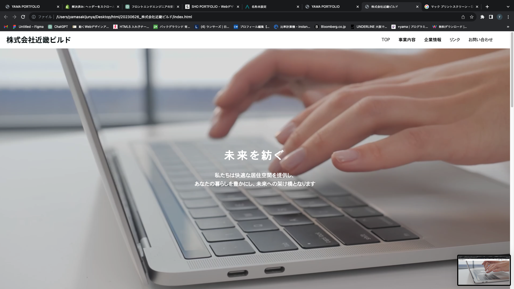

Skills

コーディング
HTML/CSSは、レスポンシブや基本的なコーディングは問題ありません。より運用しやすいサイト制作のため、SassやBEMやFLOCSSを勉強中です。使用エディタはVisualStudioCodeです。 JavaScriptは、あまり複雑なコードをスクラッチから書くことはできませんが、基本的なコードは書けます。 WordPressは、修正や画像差し替え経験があり、現在オリジナルテーマ作成の勉強をしております。

デザイン
Photoshop/Illustratorは、前職で使用しており、基本機能は問題なく使えます。 デザインプラットフォームはFigmaを勉強しております。 クライアントのブランドやビジョンをウェブ上で際立たせ、直感的なユーザーエクスペリエンスをデザインすることで、ウェブプロジェクトの成功に貢献するよう心がけてまいります。
コミュニケーション
コーディングスキルだけでなく、コミュニケーション能力も私の強みです。 プロジェクトの要件や進捗状況を明確に伝え、クライアントやチームとの円滑なコミュニケーションを確保します。 フィードバックを受け入れ、共感し、共同作業を円滑に進め、プロジェクトの成功に貢献します。
Works

近畿ビルド株式会社様
Planning / Design / HTML,CSS,JavaScript / WordPress /

Project Title 1
Description of the project. Explain your role, technologies used, and outcomes.
Project Title 1
Description of the project. Explain your role, technologies used, and outcomes.
Project Title 1
Description of the project. Explain your role, technologies used, and outcomes.
Project Title 1
Description of the project. Explain your role, technologies used, and outcomes.
Project Title 1
Description of the project. Explain your role, technologies used, and outcomes.
Project Title 1
Description of the project. Explain your role, technologies used, and outcomes.
Project Title 1
Description of the project. Explain your role, technologies used, and outcomes.
About

名前：ヤマ
略歴
関西大学法学部を卒業後、BtoB製造業と出版卸業での営業事務、通信業での社内サイト制作の経験を持ち、現在はコーディング・WordPressサイト構築をメインに活動しています。 趣味は料理と写真撮影とサイクリングと観葉植物育成。 ウェブの可能性を追求しながら、クリエイティブな世界を楽しんでいます。
資格
ウェブデザイン技能検定2級、色彩検定2級、日商簿記3級